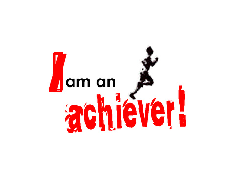

Valery
Strengths
|
Being curious in life and every day wanting to learn more about life. I spend time thinking, asking question, and exploring things that get me engaged or intrest me. I ask questions and can often lead to more questions and ideas about a topic. I also ask questions if something is unclear and try to make it clear. An example of me using it in like is doing arts and crafts because even though I am not good I like to discover new ways of doing things, fixing them, improving things makes me want to do more things. I like to learn things and learn new things everyday I did not know about. Another way I use this skill is doing science because I have to think a lot and think of different ways in which things happen and different ways to fix or to improve those things/reaction. During the process of using my strength I might feel confused because I may not know what is going on. I might also feel engaged because what is going on I can understand it clearly and it craves my attention. I feel challenged in a good way because I want to find solutions or I have to ask questions in order to be able to get things that I am learning. |
|---|
|  |
|---|